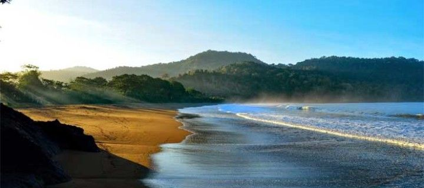

jember
Sejarah
Asal - usul nama Jember memiliki dua versi yaitu pertama berupa cerita legenda tentang puteri bernama Jembersari, sedangkan versi kedua berkaitan dengan perjalanan Raja Hayam Wuruk dari Majapahit. Sejarah Kabupaten Jember sendiri berawal dari keputusan pemerintah Hindia Belanda untuk mengatur ulang pemerintahan di Jawa Timur yang tertuang dalam Staatsblad Nomor 322 yang dikeluarkan pada 9 Agustus 1928 yang berlaku mulai 1 Januari 1929 dan ditetapkan sebagai Hari Jadi Kabupaten Jember. Saat Indonesia Merdeka, melalui UU 12/1950, pemerintah pusat resmi membentuk Kabupaten Jember bersama kabupaten lain sebagai bagian dari Provinsi Jawa Timur. (William, 2022)
Geografis
Secara geografis Kabupaten Jember berada pada posisi 7059’6” sampai 8033’56” Lintang Selatan dan 113016’28” sampai 114003’42” Bujur Timur. Wilayah Kabupaten Jember mencakup area seluas 3.293,34 Km2, dengan karakter topografi dataran ngarai yang subur pada bagian tengah dan selatan dan dikelilingi pegunungan yang memanjang batas barat dan timur. Kabupaten Jember berada pada ketinggian 0–3.300 meter di atas permukaan laut (dpl). Kabupaten Jember memiliki beberapa sungai antara lain Sungai Bedadung yang bersumber dari Pegunungan Iyang di bagian Tengah, Sungai Mayang yang bersumber dari Pegunungan Raung di bagian timur, dan Sungai Bondoyudo yang bersumber dari Pegunungan Semeru di bagian barat. (DKIKJ, 2022)
Wisata

Tanjung Papuma
Desa Lojejer, Kecamatan Wuluhan, Jember, Jawa Timur

Teluk Love
Desa Sumberrejo, Kecamatan Ambulu, Jember, Jawa Timur

Pantai Bandealit
Desa Andongrejo, Kecamatan Tempurejo, Jember, Jawa Timur

Gunung Gambir
Desa Gelang, Kecamatan Sumber Baru , Jember, Jawa Timur